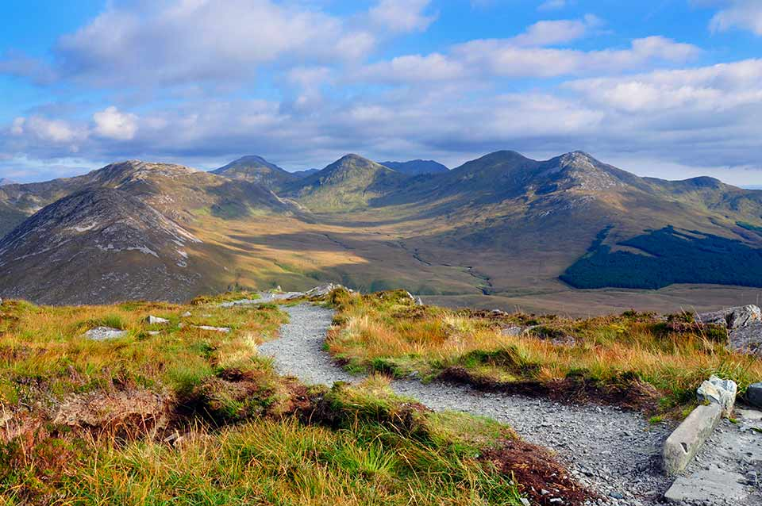
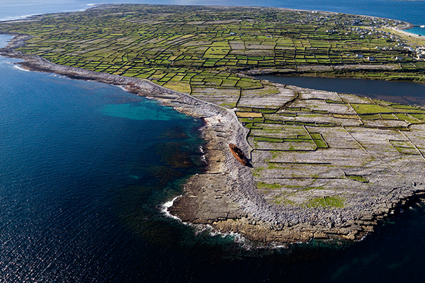
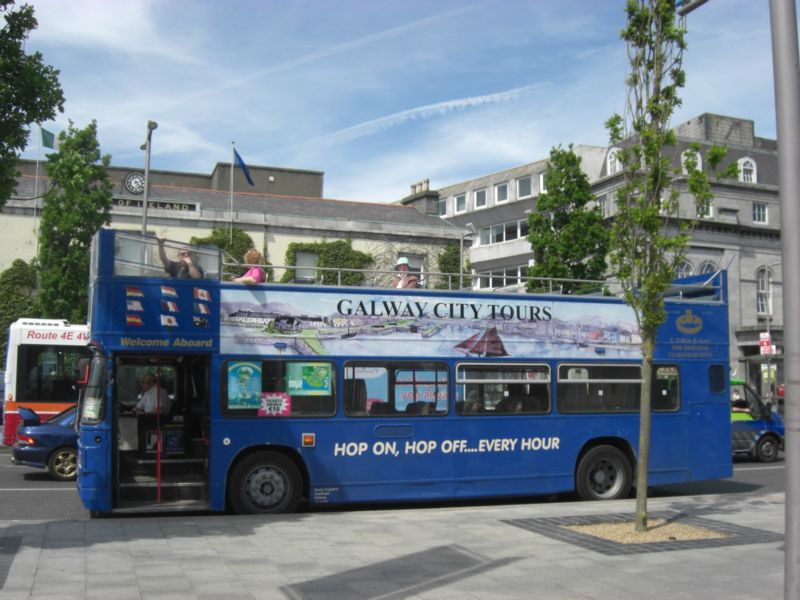
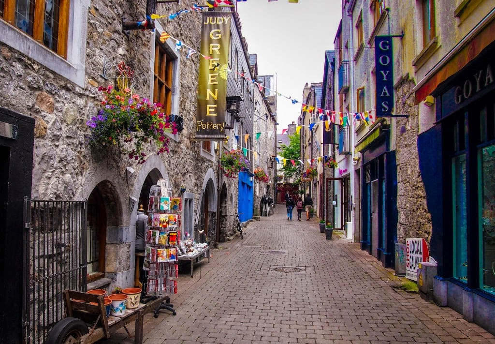
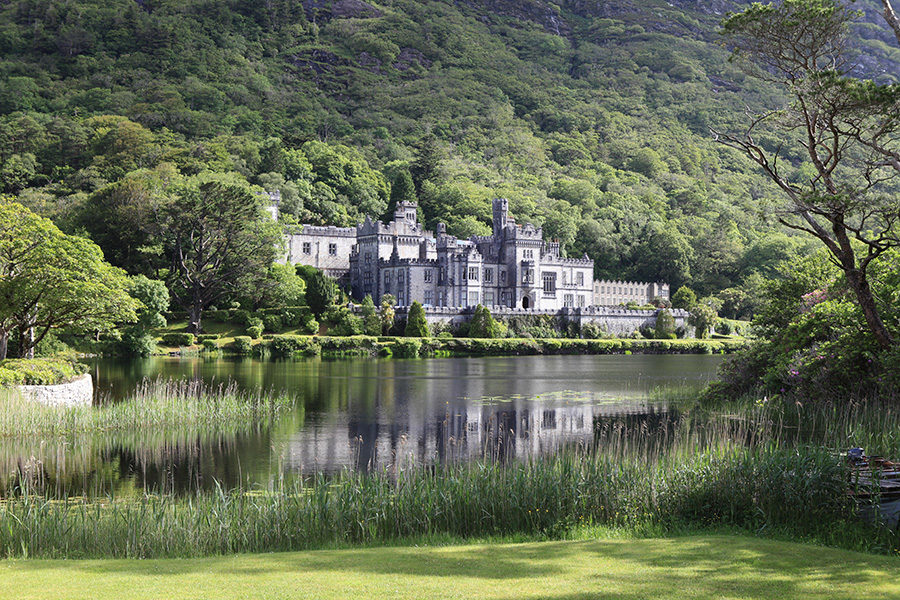
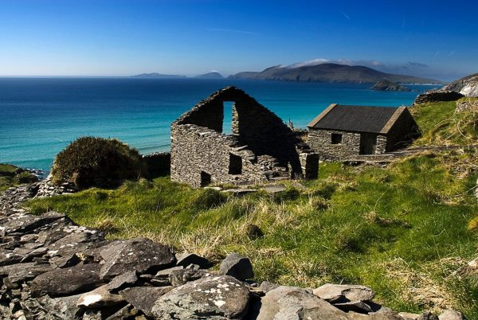
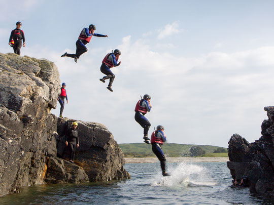

Sightseeing & Activities
-  Stunning Connemara
-
 Cliffs of Moher
Cliffs of Moher -  The Aran Islands
-  Bus tour of Galway
-  Walking Tours
-  Kylemore Abbey
-  Wild Atlantic Way
-  Adventure Activities
Facilities nearby to the B&B include:
- Eyre Square Shopping Centre.
- Three sandy beaches.
- Spectacular coastal walks.
- Variety of restaurants within walking distance.
- Friendly traditional Irish music pubs.
- Horse-riding, golfing, fishing.
- Variety of water sports.
- Bikes are available for hire.
- Tours & activities can be arranged upon arrival - discount when booked through B & B.
My wife and I visited Galway for the first time and chose this B&B for the duration of our weeklong vacation. We arrived earlier than our reservation, straight off a red-eye flight with little to no sleep in the previous 24 hours. Ellen was incredibly accommodating and took us straight to our room when we arrived. What a wonderful B&B!... (Rory M.)
Back to top of page